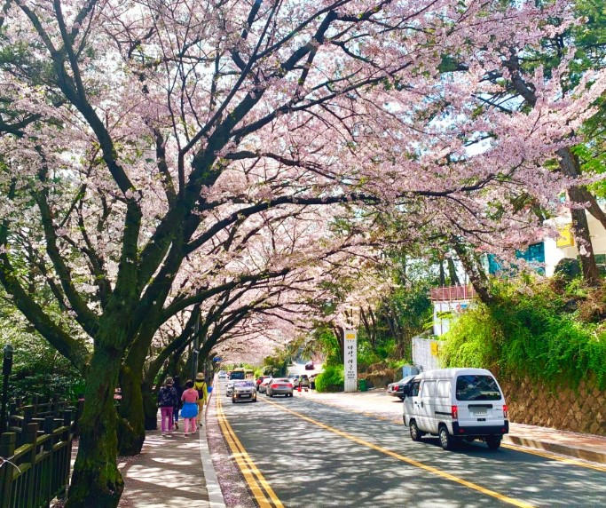
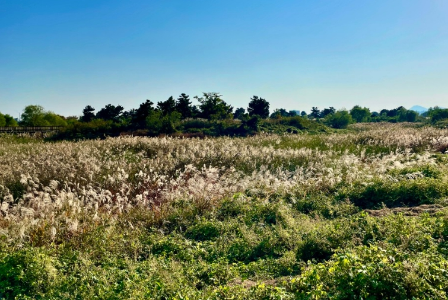

부산의 역사와 문화를 담고있는 테마 거리 초량 이바구길!
부산시 동구 초량동에 자리잡은 테마거리인 "초량 이바구길"을 소개합니다.
초량 이바구길은 초량초등학교를 주변으로 테마거리가 조성되어 있습니다. 부산의 역사와 문화를 담고 있으며, 이를 기반으로 조성된 스토리텔링의 테마거리입니다. 이곳은 일제강점기 부산항 개항에서부터 부산의 역사가 담긴 해방 후 피난민의 생활터였던 시절 그리고 산업의 부흥기인 7~80년대의 부산의 모습을 그대로 담고있는 이야기 거리입니다.
패키지 예약하기

부산 벚꽃 축제 명소로 꼽히는 해운대
'부산의 몽마르트르'라고 불리는 해운대 명소 달맞이고개. 푸른 바다와 소나무숲, 동백숲이 어우러진 아름다운 풍광으로 많은 사람들의 사랑을 받는 곳이다.
달맞이고개 아래쪽 문탠로드 입구부터 해월정과 송정해수욕장으로 이어지는 도로를 따라서 긴 벚꽃길이 조성되어 있다. 차로 드라이브해서도 좋고 산책로로 걸어가도 아주 아름다운 곳이다.
패키지 예약하기

다가올 따스한 봄 피크닉 장소로 추천! 을숙도 생태공원!
부산 피크닉 가볼만한곳 을숙도 생태공원은 을숙도 전반을 차지하고 있는 규모가 몹시 큰 자연생태공원입니다. 명지와 하단을 이어주는 징검다리 역할을 하는 곳이기도 하여 지나다니는 버스가 많기에 대중교통으로도 손쉽게 방문하실 수 있습니다.
을숙도 생태공원은 지도상 중간에 있는 낙동강하굿둑을 기점으로 오른편입니다. 오른편에는 전망광장, 버드나무숲, 호수형습지, 중앙광장, 잔디광장 등의 스팟이 자리하고 있습니다. 토돌토돌 흙길에서 나는 소리가 자연바람과 함께 힐링으로 다가오는 산책로를 갖춘 공원이랍니다.
패키지 예약하기